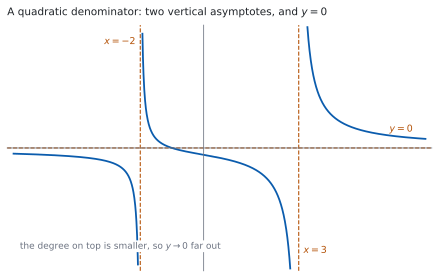
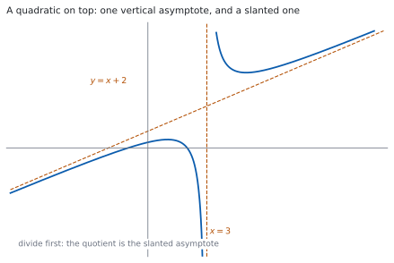

HL 2.13 — Graphs of rational functions（有理関数のグラフ・斜め漸近線）
- \(\dfrac{ax+b}{cx^{2}+dx+e}\) と \(\dfrac{ax^{2}+bx+c}{dx+e}\) の形を見分けられる。
- 垂直漸近線を、分母 \(= 0\) から出せる。
- 分母のほうが次数が高いとき、水平漸近線 \(y = 0\) があると言える。
- 分子のほうが次数が高いとき、割り算をして斜め漸近線を出せる。
- \(x\) 軸・\(y\) 軸との交点を出せる。
- 漸近線と交点を書き込んだ概形をかける。
The idea
1. Which functions are meant（どんな関数か）
シラバスは、扱う形をはっきり決めています。
Rational functions of the form \(f(x) = \dfrac{ax+b}{cx^{2}+dx+e}\), and \(f(x) = \dfrac{ax^{2}+bx+c}{dx+e}\).
\(2\) つの形だけです。分子と分母のどちらかが \(2\) 次で、もう一方が \(1\) 次です。
SL では \(\dfrac{ax+b}{cx+d}\) の形を扱いました（SL 2.8）。シラバスも、そのつながりを書いています。
Link to: rational functions (SL 2.8).
The reciprocal function is a particular case.
\(y = \dfrac{1}{x}\) も、この仲間です。
かくべきものも決まっています。
Graphs should include all asymptotes (horizontal, vertical and oblique) and any intercepts with axes.
漸近線をすべて（水平・垂直・斜め）と、軸との交点です。この \(2\) つが、このページの中身です。
覚える式はありません。手順を覚えます。
やることは、いつも同じ \(3\) つです。分母を \(0\) にする \(x\)、\(x\) が大きいときの様子、軸との交点です。
2. Vertical asymptotes（垂直漸近線）
分母が \(0\) になるところで、値がいくらでも大きく（または小さく）なります。
\[ f(x) = \frac{x+1}{x^{2}-x-6} \tag{1}\]
の分母は \(x^{2}-x-6 = (x-3)(x+2)\) です。\(x = 3\) と \(x = -2\) で \(0\) になります。
\[ x = 3, \qquad x = -2 \]
が垂直漸近線です。\(2\) 本あります。
\(x = a\) で分母も分子も \(0\) なら、\((x-a)\) が上下で約分できます。そこは漸近線ではなく、グラフに開いた点（穴）です（第 7 節）。
式を見たら、まず分子と分母を因数分解してください。 約分できるかどうかを先に見ます。
3. A quadratic denominator: the horizontal asymptote（分母が \(2\) 次のとき：水平漸近線）

式 1 で、\(x\) をとても大きくしてみます。分子と分母を \(x^{2}\) で割ると
\[ f(x) = \frac{\dfrac{1}{x} + \dfrac{1}{x^{2}}}{1 - \dfrac{1}{x} - \dfrac{6}{x^{2}}} \]
です。\(x \to \infty\) で \(\dfrac{1}{x}\) も \(\dfrac{1}{x^{2}}\) も \(0\) に近づくので、分子は \(0\) に、分母は \(1\) に近づきます。
\[ y = 0 \tag{2}\]
が水平漸近線です。図 1 のとおりです。
分母の次数のほうが高ければ、いつも \(y = 0\) です。 下のほうが速く大きくなるので、分数は小さくなります。
「漸近線に触れてはいけない」わけではありません。図 1 のグラフは、\(x = -1\) で \(y = 0\) を横切っています。
漸近線が言っているのは、遠くでの様子だけです。近くで交わってもかまいません。
4. A quadratic numerator: the oblique asymptote（分子が \(2\) 次のとき：斜め漸近線）

\[ f(x) = \frac{x^{2}-x-2}{x-3} \tag{3}\]
は、上のほうが次数が高い形です。このときは割り算をします（HL 2.12）。
\[ x^{2}-x-2 = (x+2)(x-3) + 4 \]
なので
\[ f(x) = x + 2 + \frac{4}{x-3} \tag{4}\]
です。\(x\) が大きくなると \(\dfrac{4}{x-3}\) は \(0\) に近づくので、\(f(x)\) は直線 \(y = x+2\) に近づきます。
\[ y = x + 2 \]
が斜め漸近線です。図 2 のとおりです。
\[ \text{斜め漸近線} = \text{割り算の商} \tag{5}\]
分母 \(x-3 = 0\) から、垂直漸近線 \(x = 3\) もあります。
式 4 の \(\dfrac{4}{x-3}\) は、遠くで消える部分です。漸近線は \(y = x+2\) だけで、\(y = x+2+\dfrac{4}{x-3}\) ではありません。
余りは、グラフが漸近線の上側にあるか下側にあるかを決めます。\(x > 3\) では \(\dfrac{4}{x-3} > 0\) なので、グラフは漸近線の上にあります。
5. Intercepts with the axes（軸との交点）
交点の出し方は、どちらの形でも同じです。
| 交点 | 何をするか | 式 1 では |
|---|---|---|
| \(x\) 軸（\(x\)-intercept） | 分子 \(= 0\) を解く | \(x+1 = 0\) なので \((-1,\ 0)\) |
| \(y\) 軸（\(y\)-intercept） | \(x = 0\) を入れる | \(\dfrac{1}{-6}\) なので \(\left(0,\ -\dfrac{1}{6}\right)\) |
\(x\) 軸との交点は、分子だけを見ます。分数が \(0\) になるのは、分子が \(0\) で、分母が \(0\) でないときだけだからです。
\(y\) 軸との交点は、\(x = 0\) が定義域に入っているときだけあります。分母が \(x = 0\) で \(0\) になる関数には、\(y\) 切片がありません。
6. The steps for sketching the graph（グラフをかく手順）
\(4\) つを、この順にやります。
- 分子と分母を因数分解する（約分できるかを見る）。
- 分母 \(= 0\) から垂直漸近線。
- 次数をくらべて、水平漸近線（\(y = 0\)）か、割り算をして斜め漸近線。
- 交点を出す。
そのあとで、漸近線を点線でかき、交点を打ってから曲線をつなぎます。
\(x = 3\) の右すぐでは、式 3 の分母 \(x-3\) は小さい正の数です。分子 \(x^{2}-x-2\) は \(x = 3\) で \(4 > 0\) なので、\(f(x)\) は大きな正の数になります。
\(x = 3\) の左すぐでは、分母が小さい負の数なので、\(f(x)\) は大きな負の数です。
符号を \(2\) 回見るだけで、上に跳ねるか下に落ちるかが決まります。
7. No vertical asymptote, and fractions that cancel（垂直漸近線がない場合と、約分できる場合）
分母が実数の解をもたないと、垂直漸近線はありません。
\[ f(x) = \frac{2x+1}{x^{2}+1} \]
の分母は、どの実数 \(x\) でも \(x^{2}+1 \geq 1 > 0\) です。判別式が \(0-4 = -4 < 0\) なので、\(0\) になりません。垂直漸近線は \(0\) 本で、水平漸近線 \(y = 0\) だけがあります。
約分できるときも、そこは漸近線になりません。
\[ g(x) = \frac{3x+6}{x^{2}+x-2} = \frac{3(x+2)}{(x+2)(x-1)} \]
\(x \neq -2\) では \(g(x) = \dfrac{3}{x-1}\) です。垂直漸近線は \(x = 1\) の \(1\) 本だけで、\(x = -2\) にはグラフが開いた点（値が定まらない点）があります。
\[ \text{因数分解} \to \text{約分} \to \text{そのあとで漸近線} \tag{6}\]
順番を守ってください。 分母だけを見て \(2\) 本と答えると、まちがいになります。
TI-Nspire CX II の Graphs ページに式を入力すると、曲線が出ます。menu → Window / Zoom → Window Settings で、\(x\) と \(y\) の範囲を自分で決められます。
交点は menu → Analyze Graph → Zero で読めます。
漸近線は、電卓が引いてくれるわけではありません。 それどころか、垂直漸近線のところで縦につながった線が引かれて見えることがあります。曲線が本当につながっているのではなく、点と点を結んでいるだけです。
漸近線は、自分で式から出してください。 電卓は、出した答えの形が合っているかを見るために使います。
Paper 1 では使えません。 このページの例題と演習は、すべて手で解けるようにしてあります。
Why it works
なぜ、次数をくらべるだけで水平漸近線が決まるのか
分子と分母を、分母の最高次の項で割ります。\(\dfrac{ax+b}{cx^{2}+dx+e}\) なら \(x^{2}\) で割って
\[ f(x) = \frac{\dfrac{a}{x} + \dfrac{b}{x^{2}}}{c + \dfrac{d}{x} + \dfrac{e}{x^{2}}} \]
です。\(x \to \pm\infty\) で \(\dfrac{1}{x}\) と \(\dfrac{1}{x^{2}}\) はどちらも \(0\) に近づくので、分子は \(0\) に、分母は \(c\) に近づきます。\(c \neq 0\) なので
\[ f(x) \to \frac{0}{c} = 0 \]
です。上の次数が下より小さいと、いつもこうなります。 上に \(x\) が \(1\) 個、下に \(2\) 個あって、\(1\) 個ぶん足りないからです。
なぜ、割り算の商が斜め漸近線になるのか
\(\dfrac{ax^{2}+bx+c}{dx+e}\) を割ると、商が \(1\) 次式 \(mx+n\)、余りが定数 \(R\) になります。余りの次数は、割る式より小さいからです（HL 2.12）。
\[ f(x) = mx + n + \frac{R}{dx+e} \]
\(x \to \pm\infty\) で \(\dfrac{R}{dx+e} \to 0\) なので、
\[ f(x) - (mx+n) \to 0 \]
です。\(f(x)\) と直線 \(y = mx+n\) の差が \(0\) に近づくので、これが漸近線です。
斜め漸近線があるのは、分子の次数が分母よりちょうど \(1\) 大きいときだけです。 \(2\) 以上大きいと商が \(2\) 次以上になり、直線になりません。ちょうど同じなら商は定数で、水平漸近線になります。
上にいるか、下にいるか
\(f(x) - (mx+n) = \dfrac{R}{dx+e}\) の符号が、グラフが漸近線のどちら側にあるかを決めます。
式 4 では \(R = 4 > 0\) なので、\(x > 3\)（分母が正）ではグラフが漸近線の上、\(x < 3\) では下です。図 2 で確かめられます。
概形をかくときに、この \(1\) 行が効きます。 漸近線を引いたあと、上下のどちらに寄せるかが決まるからです。
約分できるとき
\(\dfrac{3(x+2)}{(x+2)(x-1)}\) は、\(x \neq -2\) のところでは \(\dfrac{3}{x-1}\) と同じ値です。ところが \(x = -2\) では、もとの式は \(\dfrac{0}{0}\) で値がありません。
ですから、グラフは \(y = \dfrac{3}{x-1}\) の曲線から、\(x = -2\) にあたる点だけを取り除いたものになります。
漸近線ではありません。 漸近線なら、近づくにつれて \(y\) がいくらでも大きくなるはずですが、ここでは \(\dfrac{3}{-3} = -1\) に近づくだけです。
Worked examples
問題文は英語です。意味が理解できなかったら、問題文の下の「日本語訳」を開いてください。解説は日本語です。
例題も演習も、すべて電卓なしで解けます。 Paper 1 のつもりで解いてください。
例題 1 Let \(f(x) = \dfrac{2x-4}{x^{2}-9}\). Find the equations of all the asymptotes of the graph of \(y = f(x)\), and the coordinates of the points where the graph meets the axes.
日本語訳
\(f(x) = \dfrac{2x-4}{x^{2}-9}\) とします。\(y = f(x)\) のグラフの漸近線をすべて求め、グラフが軸と交わる点の座標を求めなさい。
まず因数分解します（第 6 節）。
\[ f(x) = \frac{2(x-2)}{(x-3)(x+3)} \]
約分できません。 分子の \((x-2)\) は、分母のどちらとも合いません。
垂直漸近線。 分母 \(= 0\) から
\[ x = 3, \qquad x = -3 \]
水平漸近線。 分子は \(1\) 次、分母は \(2\) 次で、分母のほうが高いので（第 3 節）
\[ y = 0 \]
\(x\) 軸との交点。 分子 \(= 0\) から \(x = 2\) です。\((2,\ 0)\) です。
\(y\) 軸との交点。 \(x = 0\) を入れて
\[ f(0) = \frac{-4}{-9} = \frac{4}{9} \]
\(\left(0,\ \dfrac{4}{9}\right)\) です。
検算。 \(y\) 切片の符号を見ます。 分子も分母も負なので、商は正です ✓ \(\dfrac{4}{9}\) は正で、合っています。
検算（遠くの様子）。 \(x = 10\) とすると \(\dfrac{16}{91} \approx 0.18\) で、\(0\) に近い値です ✓ 水平漸近線が \(y = 0\) であることと合います。
\[f(x) = \frac{2(x-2)}{(x-3)(x+3)}\]
Vertical asymptotes: \(x = 3\) and \(x = -3\).
The degree of the numerator is less than the degree of the denominator, so the horizontal asymptote is \(y = 0\).
\(x\)-intercept: \(2x-4 = 0\) gives \((2,\ 0)\).
\(y\)-intercept: \(\ f(0) = \dfrac{-4}{-9} = \dfrac{4}{9}\), giving \(\left(0,\ \dfrac{4}{9}\right)\).
例題 2 Let \(f(x) = \dfrac{x^{2}+3x-4}{x+2}\). Find the equations of all the asymptotes of the graph of \(y = f(x)\), and the coordinates of the points where the graph meets the axes.
日本語訳
\(f(x) = \dfrac{x^{2}+3x-4}{x+2}\) とします。\(y = f(x)\) のグラフの漸近線をすべて求め、グラフが軸と交わる点の座標を求めなさい。
分子が \(2\) 次、分母が \(1\) 次なので、割り算をします（第 4 節）。
\((x+1)(x+2) = x^{2}+3x+2\) なので
\[ x^{2}+3x-4 = (x+1)(x+2) - 6 \]
\[ f(x) = x + 1 - \frac{6}{x+2} \]
斜め漸近線は \(y = x+1\) です。 垂直漸近線は、分母 \(= 0\) から \(x = -2\) です。
\(x\) 軸との交点。 分子を因数分解すると \(x^{2}+3x-4 = (x+4)(x-1)\) なので、\(x = -4\) と \(x = 1\) です。\((-4,\ 0)\) と \((1,\ 0)\) です。
\(y\) 軸との交点。
\[ f(0) = \frac{-4}{2} = -2 \]
\((0,\ -2)\) です。
検算。 割り算の形に \(x = 0\) を入れます。 \(0 + 1 - \dfrac{6}{2} = 1 - 3 = -2\) ✓ もとの式と同じ値になりました。割り算が合っていることの確かめになります。
検算（遠くの様子）。 \(x = 10\) では \(f(10) = \dfrac{100+30-4}{12} = \dfrac{126}{12} = 10.5\) です。漸近線は \(y = 11\) なので、\(0.5\) だけ下にあります。割り算の形では \(-\dfrac{6}{12} = -0.5\) ✓ ずれの大きさまで合いました。
\[x^{2}+3x-4 = (x+1)(x+2) - 6, \qquad \text{so} \qquad f(x) = x+1-\frac{6}{x+2}\]
Oblique asymptote: \(y = x+1\). Vertical asymptote: \(x = -2\).
\(x\)-intercepts: \(x^{2}+3x-4 = (x+4)(x-1) = 0\), giving \((-4,\ 0)\) and \((1,\ 0)\).
\(y\)-intercept: \(\ f(0) = \dfrac{-4}{2} = -2\), giving \((0,\ -2)\).
例題 3 Let \(f(x) = \dfrac{x^{2}+k}{x-1}\), where \(k\) is a real number.
(a) Show that \(f(x) = x+1+\dfrac{k+1}{x-1}\).
(b) Write down the equations of the asymptotes when \(k = 3\).
(c) Describe the graph of \(y = f(x)\) when \(k = -1\).
日本語訳
\(k\) を実数として、\(f(x) = \dfrac{x^{2}+k}{x-1}\) とします。
(a) \(f(x) = x+1+\dfrac{k+1}{x-1}\) となることを示しなさい。
(b) \(k = 3\) のときの漸近線の式を書きなさい。
(c) \(k = -1\) のときの \(y = f(x)\) のグラフを説明しなさい。
(a) \((x+1)(x-1) = x^{2}-1\) なので
\[ x^{2}+k = (x+1)(x-1) + (k+1) \]
です。両辺を \((x-1)\) で割ると、示したい式になります。
(b) \(k = 3\) なら \(f(x) = x+1+\dfrac{4}{x-1}\) です。
\[ y = x+1 \ \text{（斜め）}, \qquad x = 1 \ \text{（垂直）} \]
(c) \(k = -1\) なら \(k+1 = 0\) なので、余りが消えます。
\[ f(x) = x+1 \qquad (x \neq 1) \]
試験ではこう書く
When \(k = -1\) the remainder \(k+1\) is zero, so \(x^{2}-1 = (x+1)(x-1)\) and \(f(x) = \dfrac{(x+1)(x-1)}{x-1} = x+1\) for every \(x\) except \(x = 1\). At \(x = 1\) the original expression is \(\dfrac{0}{0}\), which is not defined, so \(x = 1\) is not in the domain. The graph is therefore the straight line \(y = x+1\) with the single point \((1,\ 2)\) removed. There is no vertical asymptote at \(x = 1\), because the values of \(f\) approach \(2\) there rather than growing without bound, and there is no oblique asymptote either, since the graph is the line itself rather than a curve approaching it.
（\(k = -1\) では約分できて \(f(x) = x+1\) になるが、\(x = 1\) だけは定義されない。グラフは直線 \(y = x+1\) から \((1,\ 2)\) を抜いたもので、漸近線はない、という意味です。）
検算。 (a) を \(x = 2\)、\(k = 3\) で確かめます。 もとの式は \(\dfrac{4+3}{1} = 7\)、割り算の形は \(2+1+\dfrac{4}{1} = 7\) ✓
検算（(c) のほう）。 \(k = -1\)、\(x = 3\) ならもとの式は \(\dfrac{9-1}{2} = 4\)、直線は \(3+1 = 4\) ✓ \(x = 1\) 以外では、確かに同じ値です。
(a) \(x^{2}+k = \left(x^{2}-1\right) + (k+1) = (x+1)(x-1) + (k+1)\)
Dividing by \(x-1\): \(\ f(x) = x+1+\dfrac{k+1}{x-1}\).
(b) Oblique asymptote \(y = x+1\); vertical asymptote \(x = 1\).
(c) When \(k = -1\), \(f(x) = x+1\) for all \(x \neq 1\). The graph is the line \(y = x+1\) with the point \((1,\ 2)\) removed; there is no vertical asymptote.
例題 4 Let \(f(x) = \dfrac{2x+3}{x^{2}+1}\).
(a) Explain why the graph of \(y = f(x)\) has no vertical asymptote.
(b) Write down the equation of the horizontal asymptote, and find the coordinates of the points where the graph meets the axes.
日本語訳
\(f(x) = \dfrac{2x+3}{x^{2}+1}\) とします。
(a) \(y = f(x)\) のグラフに垂直漸近線がない理由を説明しなさい。
(b) 水平漸近線の式を書き、グラフが軸と交わる点の座標を求めなさい。
(a) 垂直漸近線は、分母が \(0\) になるところにあります（第 2 節）。\(x^{2}+1 = 0\) の判別式は
\[ 0^{2} - 4(1)(1) = -4 < 0 \]
なので、実数の解がありません。 どの実数 \(x\) でも \(x^{2}+1 \geq 1 > 0\) です。ですから、分母が \(0\) になる \(x\) がなく、垂直漸近線もありません。
(b) 分母のほうが次数が高いので、水平漸近線は \(y = 0\) です。
\(x\) 軸との交点。 分子 \(= 0\) から \(x = -\dfrac{3}{2}\) で、\(\left(-\dfrac{3}{2},\ 0\right)\) です。
\(y\) 軸との交点。 \(f(0) = \dfrac{3}{1} = 3\) で、\((0,\ 3)\) です。
検算。 \(x = -\dfrac{3}{2}\) を入れます。 分子は \(-3+3 = 0\)、分母は \(\dfrac{9}{4}+1 = \dfrac{13}{4} \neq 0\) なので、\(f\left(-\dfrac{3}{2}\right) = 0\) ✓ 分母が \(0\) でないことも確かめておきます。
検算（遠くの様子）。 \(x = 100\) では \(\dfrac{203}{10001} \approx 0.02\) です ✓ \(0\) に近づいています。
(a) The discriminant of \(x^{2}+1\) is \(0-4 = -4 < 0\), so \(x^{2}+1\) has no real zeros and \(x^{2}+1 > 0\) for all real \(x\). The denominator is never zero, so there is no vertical asymptote.
(b) Horizontal asymptote: \(y = 0\).
\(x\)-intercept: \(2x+3 = 0\), giving \(\left(-\dfrac{3}{2},\ 0\right)\).
\(y\)-intercept: \(\ f(0) = 3\), giving \((0,\ 3)\).
Common errors
分子と分母に共通の因数があると、そこは漸近線になりません（第 7 節）。
いつも因数分解から始めてください。 約分できるかどうかは、それを見ないと分かりません。
\(f(x) = x+2+\dfrac{4}{x-3}\) の漸近線は \(y = x+2\) です。\(\dfrac{4}{x-3}\) は遠くで消える部分なので、入れません（第 4 節）。
余りは、グラフが漸近線のどちら側にあるかを決めるために使います。
\(x\) 軸との交点は、分子 \(= 0\) です（第 5 節）。分母 \(= 0\) は、垂直漸近線のほうです。
\(2\) つは、まったく別のものです。\(y = 0\) になるのは分子が \(0\) のとき、と言葉で言えるようにしておいてください。
\(x^{2}+1\) や \(x^{2}+x+1\) は、どの実数 \(x\) でも \(0\) になりません。判別式を見てください（第 7 節）。
負なら、垂直漸近線は \(0\) 本です。
分子が \(2\) 次・分母が \(1\) 次のときに \(y = 0\) と書くのは、まちがいです。遠くで \(y\) は大きくなります。
上と下の次数をくらべてから、水平か斜めかを決めてください（第 6 節）。
水平漸近線や斜め漸近線は、近くで交わることがあります（第 3 節）。
漸近線が言っているのは、遠くでの様子だけです。垂直漸近線だけは、定義されない \(x\) なので交わりません。
Exercises
各問題に、折りたたみが \(3\) つ付いています。日本語訳、解答例（答案用紙に書くべきこと。英語です）、解説（なぜそうなるか。日本語です）。
まず自分で解いて、次に解答例と見くらべてください。解説は、合わなかったときだけ開けば十分です。
1 Let \(f(x) = \dfrac{x-1}{x^{2}-4}\). Find the equations of all the asymptotes, and the coordinates of the points where the graph meets the axes.
日本語訳
\(f(x) = \dfrac{x-1}{x^{2}-4}\) とします。漸近線をすべて求め、グラフが軸と交わる点の座標を求めなさい。
\[f(x) = \frac{x-1}{(x-2)(x+2)}\]
Vertical asymptotes: \(x = 2\) and \(x = -2\).
The numerator has lower degree than the denominator, so the horizontal asymptote is \(y = 0\).
\(x\)-intercept: \((1,\ 0)\).
\(y\)-intercept: \(\ f(0) = \dfrac{-1}{-4} = \dfrac{1}{4}\), giving \(\left(0,\ \dfrac{1}{4}\right)\).
\(x^{2}-4\) は \(2\) 乗の差なので \((x-2)(x+2)\) です。分子の \((x-1)\) とは約分できません。
検算。 \(y\) 切片は、負 \(\div\) 負で正です ✓ \(\dfrac{1}{4} > 0\) と合っています。
検算（遠くの様子）。 \(x = 10\) では \(\dfrac{9}{96} \approx 0.09\) で、\(0\) に近い値です ✓
2 Let \(f(x) = \dfrac{x+3}{x^{2}+2x-8}\). Find the equations of all the asymptotes, and the coordinates of the points where the graph meets the axes.
日本語訳
\(f(x) = \dfrac{x+3}{x^{2}+2x-8}\) とします。漸近線をすべて求め、グラフが軸と交わる点の座標を求めなさい。
\[f(x) = \frac{x+3}{(x+4)(x-2)}\]
Vertical asymptotes: \(x = -4\) and \(x = 2\).
Horizontal asymptote: \(y = 0\).
\(x\)-intercept: \((-3,\ 0)\).
\(y\)-intercept: \(\ f(0) = \dfrac{3}{-8}\), giving \(\left(0,\ -\dfrac{3}{8}\right)\).
\(x^{2}+2x-8\) は、足して \(2\)・掛けて \(-8\) の \(2\) 数、つまり \(4\) と \(-2\) で分けられます。
\(x = -3\) は、分母の \(2\) つの解のあいだにあります。 概形をかくときは、そこを通ることに気をつけてください。
検算。 \(f(-3) = \dfrac{0}{9-6-8} = \dfrac{0}{-5} = 0\) ✓ 分母が \(0\) でないことも確かめました。
検算（\(y\) 切片）。 \(f(0) = \dfrac{3}{0+0-8} = -\dfrac{3}{8}\) ✓
3 Let \(f(x) = \dfrac{x^{2}-4}{x+1}\). Find the equations of all the asymptotes, and the coordinates of the points where the graph meets the axes.
日本語訳
\(f(x) = \dfrac{x^{2}-4}{x+1}\) とします。漸近線をすべて求め、グラフが軸と交わる点の座標を求めなさい。
\[x^{2}-4 = (x-1)(x+1) - 3, \qquad \text{so} \qquad f(x) = x-1-\frac{3}{x+1}\]
Oblique asymptote: \(y = x-1\). Vertical asymptote: \(x = -1\).
\(x\)-intercepts: \(x^{2}-4 = 0\), giving \((2,\ 0)\) and \((-2,\ 0)\).
\(y\)-intercept: \(\ f(0) = \dfrac{-4}{1} = -4\), giving \((0,\ -4)\).
割り算をします（第 4 節）。\((x-1)(x+1) = x^{2}-1\) なので、\(x^{2}-4\) にするには \(-3\) を足します。
検算。 割り算の形に \(x = 0\) を入れると \(0-1-\dfrac{3}{1} = -4\) ✓ もとの式と同じです。
検算（遠くの様子）。 \(x = 9\) では \(f(9) = \dfrac{77}{10} = 7.7\)、漸近線は \(9-1 = 8\) です。\(-\dfrac{3}{10} = -0.3\) だけ下 ✓
4 Let \(f(x) = \dfrac{x^{2}+2x+5}{x-1}\). Find the equations of all the asymptotes, and show that the graph does not meet the \(x\)-axis.
日本語訳
\(f(x) = \dfrac{x^{2}+2x+5}{x-1}\) とします。漸近線をすべて求め、グラフが \(x\) 軸と交わらないことを示しなさい。
\[x^{2}+2x+5 = (x+3)(x-1) + 8, \qquad \text{so} \qquad f(x) = x+3+\frac{8}{x-1}\]
Oblique asymptote: \(y = x+3\). Vertical asymptote: \(x = 1\).
For an \(x\)-intercept we need \(x^{2}+2x+5 = 0\). Its discriminant is
\[\Delta = 2^{2}-4(1)(5) = 4-20 = -16 < 0\]
so there are no real solutions and the graph does not meet the \(x\)-axis.
\(x\) 軸と交わるかどうかは、分子の判別式で決まります（第 5 節）。
検算。 \((x+3)(x-1) = x^{2}+2x-3\) です。\(+8\) で \(x^{2}+2x+5\) ✓
検算（\(y\) 切片）。 \(f(0) = \dfrac{5}{-1} = -5\) です。割り算の形でも \(0+3+\dfrac{8}{-1} = -5\) ✓
5 Let \(f(x) = \dfrac{2x-1}{x^{2}+x+1}\). Explain why the graph has no vertical asymptote, and find the equation of the horizontal asymptote and the coordinates of the points where the graph meets the axes.
日本語訳
\(f(x) = \dfrac{2x-1}{x^{2}+x+1}\) とします。グラフに垂直漸近線がない理由を説明し、水平漸近線の式と、軸との交点の座標を求めなさい。
The discriminant of \(x^{2}+x+1\) is \(1-4 = -3 < 0\), so the denominator has no real zeros and is never \(0\). Hence there is no vertical asymptote.
Horizontal asymptote: \(y = 0\).
\(x\)-intercept: \(\ 2x-1 = 0\), giving \(\left(\dfrac{1}{2},\ 0\right)\).
\(y\)-intercept: \(\ f(0) = \dfrac{-1}{1} = -1\), giving \((0,\ -1)\).
例題 4 と同じ形です。判別式を書くところまでが答えで、「\(0\) にならないから」だけでは足りません。
検算。 \(x^{2}+x+1\) に \(x = -1\) を入れると \(1\)、\(x = 0\) で \(1\)、\(x = 1\) で \(3\) です ✓ どれも正です。
検算（\(x\) 切片）。 \(f\left(\dfrac{1}{2}\right) = \dfrac{0}{\frac{1}{4}+\frac{1}{2}+1} = 0\) ✓ 分母は \(\dfrac{7}{4} \neq 0\) です。
6 The graph of \(f(x) = \dfrac{ax+b}{x^{2}-x-6}\) has a \(y\)-intercept of \(-1\) and an \(x\)-intercept at \(x = -3\). Find the value of \(a\) and the value of \(b\).
日本語訳
\(f(x) = \dfrac{ax+b}{x^{2}-x-6}\) のグラフは、\(y\) 切片が \(-1\) で、\(x = -3\) で \(x\) 軸と交わります。\(a\) と \(b\) の値を求めなさい。
\(y\)-intercept: \(\ f(0) = \dfrac{b}{-6} = -1\), so \(b = 6\).
\(x\)-intercept at \(x = -3\): \(\ -3a+b = 0\), so \(-3a+6 = 0\) and \(a = 2\).
\(y\) 切片のほうが先です。 \(b\) だけで決まるからです。\(a\) は、そのあとに \(x\) 切片の条件から出ます。
\(x^{2}-x-6 = (x-3)(x+2)\) で、\(x = -3\) は分母の解ではありません。約分は起きません。
検算。 \(f(x) = \dfrac{2x+6}{x^{2}-x-6}\) とすると、\(f(0) = \dfrac{6}{-6} = -1\) ✓
検算（\(x\) 切片）。 \(f(-3) = \dfrac{-6+6}{9+3-6} = \dfrac{0}{6} = 0\) ✓ 分母が \(0\) でないことも確かめました。
7 Let \(f(x) = \dfrac{x^{2}+kx+9}{x-3}\), where \(k\) is a real number.
(a) Show that the oblique asymptote of the graph of \(y = f(x)\) is \(y = x+k+3\).
(b) Find the value of \(k\) for which the graph has exactly one \(x\)-intercept.
日本語訳
\(k\) を実数として、\(f(x) = \dfrac{x^{2}+kx+9}{x-3}\) とします。
(a) \(y = f(x)\) のグラフの斜め漸近線が \(y = x+k+3\) であることを示しなさい。
(b) グラフの \(x\) 軸との交点がちょうど \(1\) つになる \(k\) の値を求めなさい。
(a) \(\bigl(x+(k+3)\bigr)(x-3) = x^{2}+kx-3k-9\), so
\[x^{2}+kx+9 = \bigl(x+(k+3)\bigr)(x-3) + (3k+18)\]
\[f(x) = x+k+3+\frac{3k+18}{x-3}\]
and the oblique asymptote is \(y = x+k+3\).
(b) The discriminant of \(x^{2}+kx+9\) is \(k^{2}-36\).
If \(k^{2}-36 < 0\) there are no real zeros and no \(x\)-intercepts. If \(k^{2}-36 > 0\) there are two distinct real zeros; neither can equal \(3\), since \(x = 3\) would need \(9+3k+9 = 0\), that is \(k = -6\), which does not satisfy \(k^{2}-36 > 0\). So there are two \(x\)-intercepts.
If \(k = 6\), \(x^{2}+6x+9 = (x+3)^{2}\), giving the single \(x\)-intercept \((-3,\ 0)\).
If \(k = -6\), \(x^{2}-6x+9 = (x-3)^{2}\), so \(f(x) = x-3\) for \(x \neq 3\); the value \(x = 3\) is not in the domain, so there is no \(x\)-intercept.
Hence \(k = 6\).
(b) は、\(k = \pm 6\) で終わりにしないところが山です。 \(k = -6\) では分子が \((x-3)^{2}\) になり、分母と約分できてしまいます（第 7 節）。
約分したあとの \(x-3\) は \(x = 3\) で \(0\) ですが、\(x = 3\) は定義域に入っていません。 ですから交点になりません。
検算。 \(k = 6\) のとき \(f(-3) = \dfrac{9-18+9}{-6} = 0\) ✓ 分母は \(-6 \neq 0\) です。
検算（\(k = -6\) のほう）。 \(f(x) = \dfrac{(x-3)^{2}}{x-3}\) で、\(x = 4\) なら \(\dfrac{1}{1} = 1 = 4-3\) ✓ 直線と同じ値になり、\(x = 3\) だけが抜けています。
試験ではこう書く
An \(x\)-intercept needs \(x^{2}+kx+9 = 0\) with the solution also lying in the domain, that is \(x \neq 3\). The discriminant of \(x^{2}+kx+9\) is \(k^{2}-36\). When \(k^{2} < 36\) there are no real solutions, so no \(x\)-intercepts. When \(k^{2} > 36\) there are two distinct real solutions, and neither is \(3\), because \(x = 3\) would require \(9+3k+9 = 0\), that is \(k = -6\), which is excluded here; so there are two \(x\)-intercepts. That leaves \(k = 6\) and \(k = -6\). For \(k = 6\) the numerator is \((x+3)^{2}\), whose only zero is \(x = -3\), and \(-3\) is in the domain, so there is exactly one \(x\)-intercept. For \(k = -6\) the numerator is \((x-3)^{2}\), and the only candidate \(x = 3\) is excluded from the domain, so there is no \(x\)-intercept at all. Hence \(k = 6\).
8 The graph of \(f(x) = \dfrac{x^{2}+bx+c}{x-2}\) has oblique asymptote \(y = x+5\) and passes through the point \((0,\ 4)\). Find the value of \(b\) and the value of \(c\).
日本語訳
\(f(x) = \dfrac{x^{2}+bx+c}{x-2}\) のグラフは、斜め漸近線が \(y = x+5\) で、点 \((0,\ 4)\) を通ります。\(b\) と \(c\) の値を求めなさい。
Dividing, the quotient is \(x+(b+2)\), so the oblique asymptote is \(y = x+b+2\).
\[b+2 = 5 \ \Rightarrow \ b = 3\]
Through \((0,\ 4)\): \(\ f(0) = \dfrac{c}{-2} = 4\), so \(c = -8\).
商だけが漸近線です（第 4 節）。\((x+m)(x-2) = x^{2}+(m-2)x-2m\) なので、\(x\) の係数をくらべて \(m-2 = b\)、つまり \(m = b+2\) です。
\((0,\ 4)\) を通る条件は、\(c\) だけで決まります。
検算。 \(f(x) = \dfrac{x^{2}+3x-8}{x-2}\) とすると \(f(0) = \dfrac{-8}{-2} = 4\) ✓
検算（漸近線のほう）。 \(x^{2}+3x-8 = (x+5)(x-2)+2\) です。商が \(x+5\) ✓
9 Let \(f(x) = \dfrac{x^{2}+1}{x}\).
(a) Find the equations of the asymptotes of the graph of \(y = f(x)\).
(b) Explain why the graph meets neither the \(x\)-axis nor the \(y\)-axis.
日本語訳
\(f(x) = \dfrac{x^{2}+1}{x}\) とします。
(a) \(y = f(x)\) のグラフの漸近線の式を求めなさい。
(b) このグラフが \(x\) 軸とも \(y\) 軸とも交わらない理由を説明しなさい。
(a) \(f(x) = x + \dfrac{1}{x}\)
Oblique asymptote: \(y = x\). Vertical asymptote: \(x = 0\).
(b) An \(x\)-intercept needs \(x^{2}+1 = 0\), which has no real solution, so the graph does not meet the \(x\)-axis. A \(y\)-intercept needs \(x = 0\), but \(x = 0\) makes the denominator zero and is not in the domain, so the graph does not meet the \(y\)-axis.
\(\dfrac{x^{2}+1}{x} = \dfrac{x^{2}}{x} + \dfrac{1}{x} = x + \dfrac{1}{x}\) です。割り算をするまでもなく、\(2\) つに分けられます。
検算。 \(x = 2\) では \(\dfrac{5}{2} = 2.5\)、\(x+\dfrac{1}{x} = 2+0.5 = 2.5\) ✓
検算（遠くの様子）。 \(x = 100\) では \(100.01\) で、\(y = x\) にとても近い値です ✓
試験ではこう書く
For the graph to meet the \(x\)-axis we need \(f(x) = 0\), and a fraction is zero only when its numerator is zero. Here the numerator is \(x^{2}+1\), and \(x^{2} \geq 0\) for every real \(x\), so \(x^{2}+1 \geq 1 > 0\) and the numerator is never zero. Hence the graph never meets the \(x\)-axis. For the graph to meet the \(y\)-axis we would need the value of \(f\) at \(x = 0\), but the denominator is \(x\), which is zero at \(x = 0\), so \(0\) is not in the domain of \(f\) and there is no point of the graph on the \(y\)-axis. In fact \(x = 0\) is a vertical asymptote.
10 A student writes: “The graph of \(f(x) = \dfrac{x^{2}+3x+2}{x+2}\) has a vertical asymptote at \(x = -2\), because the denominator is zero there.” Explain the error, and describe the graph correctly.
日本語訳
ある生徒が、次のように書きました。「\(f(x) = \dfrac{x^{2}+3x+2}{x+2}\) のグラフは、\(x = -2\) で分母が \(0\) になるので、そこに垂直漸近線がある。」まちがいを説明し、グラフを正しく述べなさい。
The numerator factorises as \(x^{2}+3x+2 = (x+1)(x+2)\), so the numerator is also zero at \(x = -2\). Cancelling,
\[f(x) = x+1 \qquad (x \neq -2)\]
The values of \(f\) approach \(-1\) as \(x\) approaches \(-2\), not infinity, so there is no vertical asymptote. The graph is the line \(y = x+1\) with the point \((-2,\ -1)\) removed.
分母だけを見たのが、まちがいのもとです（第 2 節）。分子も \(x = -2\) で \(0\) になります。
検算。 \(x = -2\) を分子に入れると \(4-6+2 = 0\) ✓ \(\dfrac{0}{0}\) の形になっています。
検算（近くの値で）。 \(x = -1.9\) では \(f(-1.9) = -0.9\)、\(x = -2.1\) では \(-1.1\) です ✓ 大きくならず、\(-1\) に近づいています。 漸近線ならこうはなりません。
試験ではこう書く
The test for a vertical asymptote is not that the denominator is zero, but that the value of the function grows without bound. Here the numerator factorises as \((x+1)(x+2)\), so it is zero at \(x = -2\) as well, and the fraction takes the indeterminate form \(\dfrac{0}{0}\) there. Cancelling the common factor \((x+2)\) gives \(f(x) = x+1\) for every \(x\) except \(x = -2\). As \(x\) approaches \(-2\) the values of \(f\) approach \(-1\), which is finite, so there is no vertical asymptote. The correct description is that the graph is the straight line \(y = x+1\) with the single point \((-2,\ -1)\) removed, since \(x = -2\) is not in the domain of \(f\).